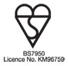

Our commitment to quality is supported by a comprehensive array of quality and safety
standards which guarantee our expertise.
CERTASS - Certass are the specialists in installer certification for the building fabric refurbishment industry.
Trustmark - TrustMark helps you find reliable, trustworthy tradesmen to make improvements and repairs inside and outside your home. The scheme is supported by Government, building industry and consumer protection groups.
BS 7412 - the British Standard for quality in the manufacture of PVC-u windows. The
standard itself specifies that the sections used are themselves manufactured to the requirements of other British Standards. Each window undergoes 3 "in process" inspections as well as an end of line inspection involving a 20-point check.

BS 7950 - the British Standard for the manufacture of PVC-u windows with enhanced
security specifies the security hardware and construction methods to be used and
adopted. Samples are taken 4 times a year to ensure compliance with the standard.
The windows must successfully resist forced entry and manual intervention tests using various burglary tools for a minimum of 3 minutes.
MACO - We fit MACO lock systems to our windows, recommended by Secured By Design, which provide increased confidence due to its innovative RAIL system. This guarantees your windows against forced entry through failure of the hardware. In the unlikely event of a successful forced entry we will repay the homeowner with up to £500 of the insurance excess.
Kömmerling - Is Europe's finest PVC-u window, door and conservatory profile system provider. Kömmerling products stand for high quality and economically prestigious systems and are highly regarded within the industry. It is Kömmerling products which The Definitive Collection is manufactured from.
Greenline - Kömmerling manufacture without the use of lead stabilizers, completely eliminating lead from the extrusion process. This change means that Kömmerling profile is one of the most environmentally friendly profile systems available.